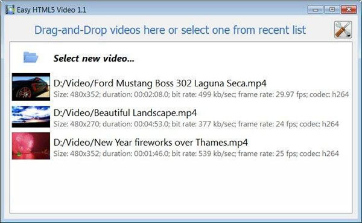
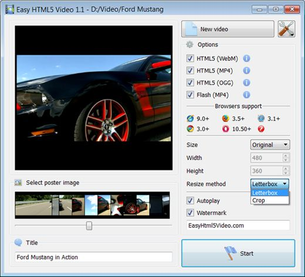
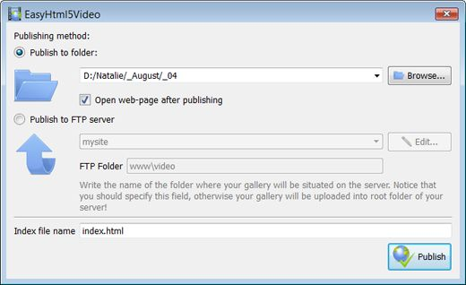
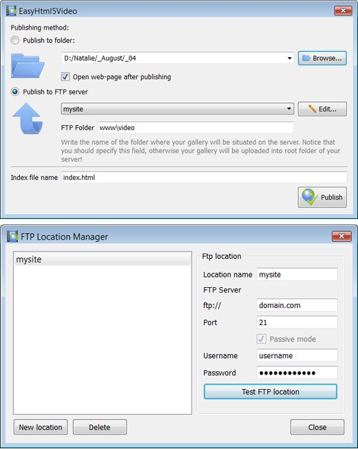

3 EASY STEPS:

Can I Add Avideo To My Website Overview
12013-06-01 Currently, HTML5 supports many video formats, than just one. This is because there is no one format that is supported by all the buy business video for website flv major browsers. For example, Mozilla Firefox doesn’t support the qtwebkit html 5 video H.264 format natively within the VIDEO tag. To let users view video in this jquery plugin thumbnail to video player format, they need to have Flash installed, and you need to spend money on expensive software to embed video. A browser like Internet Explorer on the embed webm video other hand, only supports H.264 profiles, and it doesn’t support open source formats like OGG and WebM. If you want to use the add a video to facebook from website HTML5 VIDEO tag for IE, you need to use formats such as MP4 and AVI, which are based on the website add video streaming H.264 standard. This but a video for my website is why you need to convert your videos to multiple profiles mentioned above. Conversion tools Fortunately, there are many tools today that let you transcode videos from one format to another. Many of these tools are specifically made so that you can convert videos and optimize them for delivery on the embedded video player free website internet. The HTML5 Video Format Converter is one of the better alternatives for transcoding out there. It supports nearly all video formats. No matter what kind of format you have your play video on website darken background videos in. It can convert multiple videos to an jquery video site template HTML5 compliant format. Support for HTML5 is improving all the time and videos will, in future, be easier to manage and stream.
All it takes is 3 easy steps to convert any of your video to HTML5:
1. Drag-n-drop video file to Html5 Video Creator;
2. Set poster image, select codecs, tune settings;
3. Press "Start".
As a result you'll get an add my video to my website html page with all necessary code, images, and Can I Add Avideo To My galleries video jquery flv Website videos.
Html5 Video Creator makes your play your videos your website life easier with HTML5 video!
HOW TO USE
Step 1 - Adding video
Press "Select new video" button. Browse to the location of the folder you'd like to add and select video. This video will be automatically added to converter. You can also drag the video to the my video plays automatically on my website Html5 Video Creator window or select video from recent list.

Step 2 - Specify settings
In the next window you can specify settings for the final video: select poster image, change video title, enable/disable 'Auto play' option. You can also set video size and resize method, select support for desired browsers and change the mp4 pop up video jquery watermark.

After you have all the settings defined, press the 'Start' button.
Step 3 - Publishing of Video. Put video on website or local drive
Now you are ready to publish your put video on website for free website video online or to a local drive for testing. Select the beautiful video players for websites publishing method: publish to folder or publish to FTP server

- - publish to folder. To select a free embedded video player for website folder on your attach video using jquery to website hard drive, just click the Browse folders button and choose a jquery with video flash location. Then click Ok. You can also set 'Open web page after publishing' option.
- - publish to FTP server. The popup playing video jquery code FTP Location Manager window enables you to define a galerie videos jquery number of connections for use when uploading your including vimeo videos website web site gallery to an FTP.
You are able to add a new FTP site by clicking 'Edit' to the add video to godaddy website right of the play video with no flash jquery 'Publish to FTP server' drop down list. 'FTP Location Manager' window will appear. Now type in a flash video embed website meaningful (this adding video ad on website is not the actual hostname) name for your getting video to play on my website site and fill in the facebook like video upload jquery FTP details in the denisa adding video to your website appropriate fields. You will have to type in your free video flash player for website hostname, e.g. domain. The how to embed downloadablevideo in a website FTP port is normally located on port 21 thus this has been prefilled for you already. If your web site uses another port, you will have to enter it here.
Type in your username and password for the connection. If you do not fill in this information, Video LightBox is unable to connect to your site and thus not able to upload your videos to website. If this jquery video play pause website enables anonymous connections, just type in anonymous as the username and your e-mail address as the jquery vimeo video password.

You might want to change the streaming video player mac website Directory as well if you need to have your uploaded images placed in e.g. "www/gallery/". You can specify it in the FTP Folder field on the Publish Gallery window.
Notice: Write the name of the folder where your website video gallery will be placed on the make video gallery website server. Notice that you should specify this embed flash video player in web page field; otherwise your website video gallery will be uploaded into the html for video on website page root folder of your why use videos on my website server!
Step 4 - Add Video inside your how to add video streaming on website own page.
Html5 Video Creator generates a upload video on my website special code. You can paste it in any place on your video box to your website Can I Add Avideo To My Website page where you want to add video.
* Export your ipad website video popup video using Html5 Video Creator app in any test folder on a local drive.
* Open the how to embed video using html generated index.html file in any text editor.
* Copy all code for Html5 Video Creator and paste it on your videos galleries jquery page in the how to html a video onto website the place where you want to have a putting video on a website video (inside the html5 video player in dreamweaver BODY tag).
<body>
...
<video controls="controls" autoplay="autoplay" poster="index.files/Ford_Mustang.jpg" width="480" height="352" >
.....
.....
</video>
...
</body>
Supported Browsers
Internet Explorer 9+
HTML5 with MP4
IE old versions
Flash fallback with MP4
Firefox 4+
HTML5 with WebM or OGG
Firefox 3.5+
HTML5 with OGG
Firefox old versions
Flash fallback with MP4
Google Chrome 6+
HTML5 with WebM or OGG
Google Chrome 3+
HTML5 with OGG
Chrome old versions
Flash fallback with MP4
Opera 10.60+
HTML5 with WebM or OGG
Opera 10.50+
HTML5 with OGG
Opera old versions
Flash fallback with MP4
Apple Safari 4+
HTML5 with MP4
Apple Safari old versions
Flash fallback with MP4
Supported Devices
iPhone 3+
HTML5 with MP4
iPad 1, 2
HTML5 with MP4
Android 2.1+
HTML5 with MP4

BlackBerry 6+
HTML5 with MP4
Windows Phone 7+
HTML5 with MP4
Can I Add Avideo To My Website Output Formats
WebM
Theora Ogg
H.264/MPEG-4
Embed Video on Website Awards


stream folder of videos website videos gallery for your website free videogallery on my website embedding flash video into website html embed you tube video into website put web video on your website free flv video player embed on website coding video streaming website embed adobe video player website video as popup in website template video website free streaming videos in my website flash video viewer for websites website play video 2010 can i embed live video in website embed video in website and pop up video thumbnails to website howto upload video to website to embed videos to the website how to integrate videooverlay on website video commercial for my website add flash videos to a website software live embedded videos put on your website video website drag and drop copying a video from a website